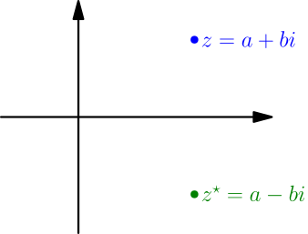
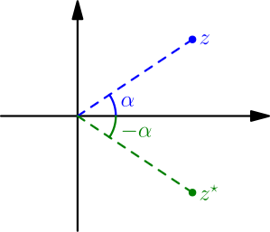

Dividing Complex Numbers¶
Now we have addition, subtraction and multiplication for complex numbers, but we don't have division.
Let's start with a reminder of how division works with real numbers. The division $a/b$ answers the question "what number times $b$ gives $a$". As long as we are not trying to divide by zero ($b \ne 0$), a number like that exist. Also, there can't be multiple such numbers, because changing the number that $b$ is multiplied with will also change the result of the multiplication.
For defining $z/w$, with complex numbers $z$ and $w$, consider the equation $$ \text{what} \cdot w = z. $$ Because complex number multiplication adds angles and multiplies lengths, we have $$ \abs{\text{what}} \abs{w} = \abs{z} $$ where I wrote the lengths as absolute values. If we are not dividing by zero, we have $\abs{w} \ne 0$ and we get $$ \abs{\text{what}} = \frac{\abs{z}}{\abs{w}}. $$ A similar calculation with angles gives $$ (\text{angle of what}) + (\text{angle of $w$}) = \text{angle of $z$} $$ and then $$ \text{angle of what} = (\text{angle of $z$}) - (\text{angle of $w$}), $$ where we also need to assume $z \ne 0$ for using the angle of $z$. So, if both $z$ and $w$ are nonzero, there is one and only one complex number that gives $z$ when multiplied with $w$; it's the complex number whose length is $\abs{z}/\abs{w}$ and angle is $(\text{angle of $z$}) - (\text{angle of $w$})$. We can call that $z/w$.
With real numbers, we also have $0/b = 0$ whenever $b \ne 0$. For a nonzero complex number $w$, $0/w$ corresponds with $$ \text{what} \cdot w = 0, $$ and by looking at lengths on both sides, we see that this works if and only if $\abs{\text{what}}=0$, which means that the complex number denoted with $\text{what}$ is zero. So, we have $0/b=0$ as expected.
Division by zero is undefined for the exact same reason as with real numbers. A division like $z/0$ corresponds with $\text{what} \cdot 0 = z$, and there can never be exactly one number satisfying that; it's always true for all complex numbers or for no complex numbers, depending on the value of $z$.
Complex number division is defined whenever we are not dividing by zero. When dividing, you can subtract the angles and divide the lengths: \begin{align*} \text{angle of $\frac{z}{w}$} &= (\text{angle of $z$})-(\text{angle of $w$}) \\ \abs{\frac{z}{w}} &= \frac{\abs{z}}{\abs{w}} \end{align*}
Subtracting angles and dividing lengths should make sense, because when multiplying, we add angles and multiply lengths; dividing does the opposite.
Rules¶
The division of complex numbers has mostly the same handy rules as division of real numbers, and they can be proved in the same way. As an example, we derive $$ \frac{vz}{wz} = \frac{v}{w} $$ for complex numbers $v,w,z$, with $w$ and $z$ nonzero. The division $\frac{vz}{wz}$ corresponds with $$ \text{what} \cdot wz = vz, $$ and that indeed is $\frac{v}{w}$ because $$ \frac{v}{w} \cdot wz = \left( \frac{v}{w} w \right)z = vz. $$ Here $\frac{v}{w} w = v$ because $\frac{v}{w}$ means the number that gives $v$ when multiplied with $w$.
If you want to see more division rule derivations, you can try doing it yourself or you can ask me to write more derivations here.
The usual calculating rules apply for division of complex numbers.
How to divide without angles and lengths¶
Let's say we want to calculate $(1+2i)/(3+4i)$. One way to do it would be to find angles and lengths of $1+2i$ and $3+4i$, but finding angles is difficult (TODO). A slightly better way to do it might be letting $$ x + yi = \frac{1+2i}{3+4i}, $$ which gives $$ \begin{align} 1+2i &= (x+yi)(3+4i) \\ &= 3x + 4xi + 3yi + 4yi^2 \\ &= 3x - 4y + (4x + 3y)i. \end{align} $$ Comparing the real and imaginary parts on both sides gives $$ \left\{\begin{aligned} 3x-4y &= 1 \cr 4x+3y &= 2 \end{aligned}\right. $$ Solving a system of equations like this is not hard, but it's quite long and error-prone (although it's not too bad with the $2 \times 2$ inverse matrix formula (TODO)). An easier way to do it is to use $\frac{vz}{wz} = \frac{v}{w}$ right-to-left, multiplying top and bottom by $z=3-4i$: $$ \frac{1+2i}{3+4i} = \frac{(1+2i)(3-4i)}{(3+4i)(3-4i)} $$ By using the formula for $(a+b)(a-b)$ (TODO), we get $$ (3+4i)(3-4i) = 3^2 - (4i)^2 = 3^2 + 4^2 = 25, $$ where we used $-i^2 = +1$. Because this is a real number, dividing by it is easy. We still have to calculate the top, and that gives $$ (1+2i)(3-4i) = 3 - 4i + 6i - 8i^2 = 11 + 2i. $$ By putting it all together, we get $$ \frac{1+2i}{3+4i} = \frac{11+2i}{25} = \frac{11}{25} + \frac{2}{25}i. $$ Now the division was easy to calculate because we divided by a real number.
To calculate $\frac{x+yi}{a+bi}$, multiply top and bottom by $a-bi$. Then the bottom should simplify to a real number.
The complex number $a-bi$ is called the conjugate of $a+bi$, and it's usually denoted with $\overline{a+bi}$ or $(a+bi)^\star$. Multiplying top and bottom by the conjugate of the bottom always works because $$ (a+bi)(a-bi) = a^2 - (bi)^2 = a^2 + b^2. $$
There's also a visual way to explain why this happens. When thinking of complex numbers as points, conjugate mirrors a complex number to the opposite side of the $x$ axis.

For that reason, if the angle of $z=a+bi$ is $\alpha$, then the angle of $z^{\star}=a-bi$ is $-\alpha$.

Then the angle of $z\,z^{\star}$ is $\alpha + (-\alpha) = 0$, so $z\,z^{\star}$ must be a positive real number. That's why it's equal to its absolute value. Because the length doesn't change when taking the conjugate, we have $\abs{z^{\star}}=\abs{z}$ and we get $$ z\,z^{\star}=\abs{z\,z^{\star}}=\abs{z}\abs{z^{\star}} = \abs{z}^2, $$ and because $\abs{z}=\sqrt{a^2+b^2}$, we have $z\,z^{\star}=a^2+b^2$. This even works if $z=0$, because as usual, we have $0=0$ in that case.
For any complex number $z=a+bi$, we have $$ z\,z^{\star} = \abs{z}^2 = a^2 + b^2, $$ where $z^{\star}=a-bi$ is the conjugate of $z$.